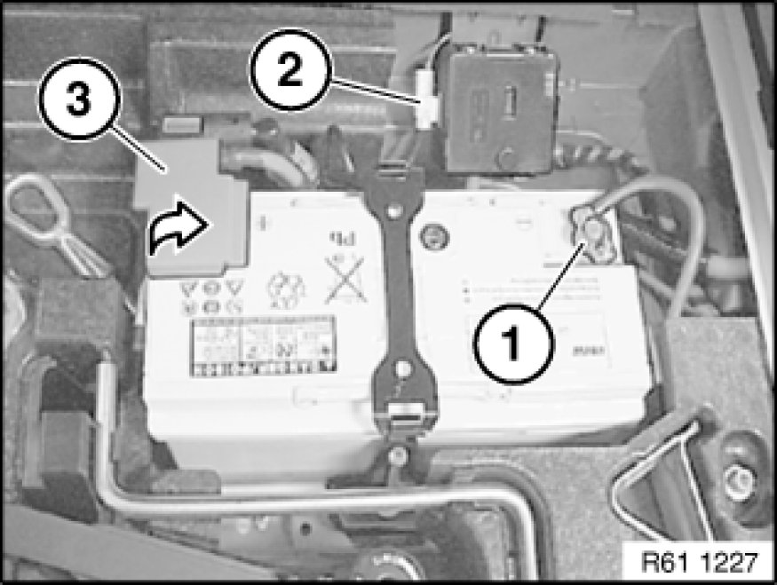
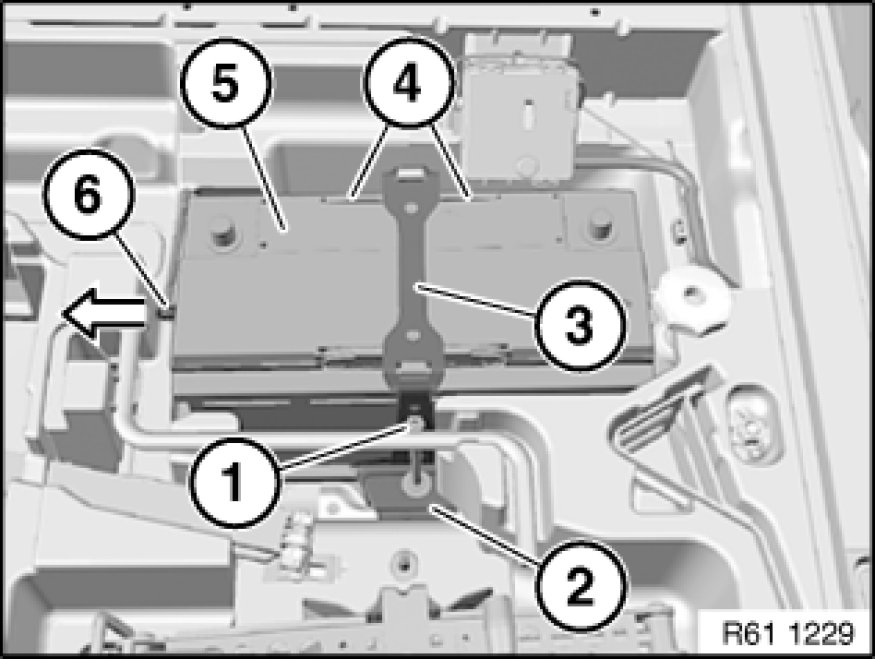

Removing and Installing/Replacing Battery
61 21 010 - Removing and installing battery

Warning!
Observe safety instructions Service Precautions for handling vehicle battery.

Necessary preliminary tasks:
- Remove luggage compartment floor trim panel 51 47 101 Removing and Installing/Replacing Luggage Compartment Floor Trim Panel

Unfasten plug connection (2) and disconnect.
Disconnect battery negative lead (1) Disconnecting and Connecting Battery Negative Lead.
Open positive terminal cover (3).

Release nut (1) of safety battery terminal (2), tightening torque 61 21 1AZ [1][2]Mechanical Specifications.
Important!
Do not under any circumstances pull/lever safety battery terminal (2) off by force.
Detach safety battery terminal (2) towards top, lay to one side and secure.

Release threaded pin (1).
Fold upper holder (3) up.
Take off holder (2).
Detach vent (6) in direction of arrow.
Fold both clips (4) open.
Lift out battery (5).
Installation Note:
Make sure battery (5) is correctly seated in associated mounts.